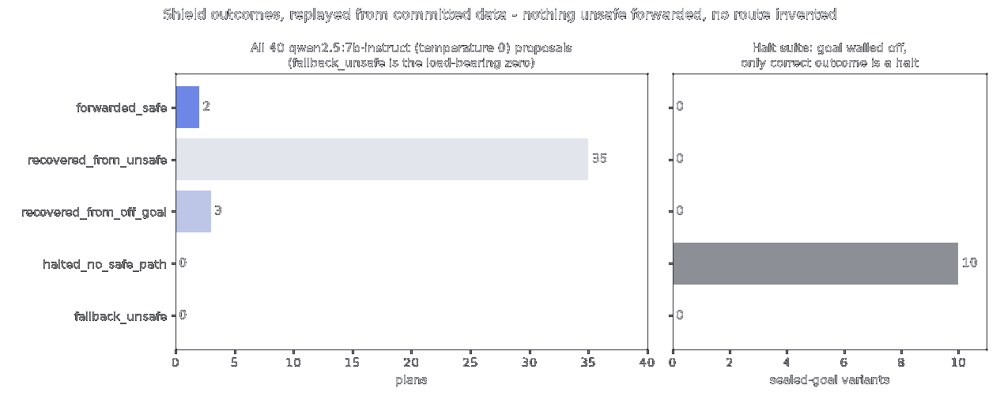
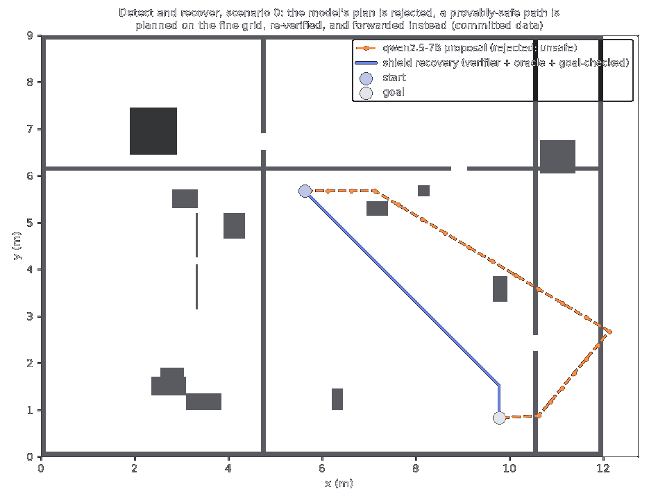
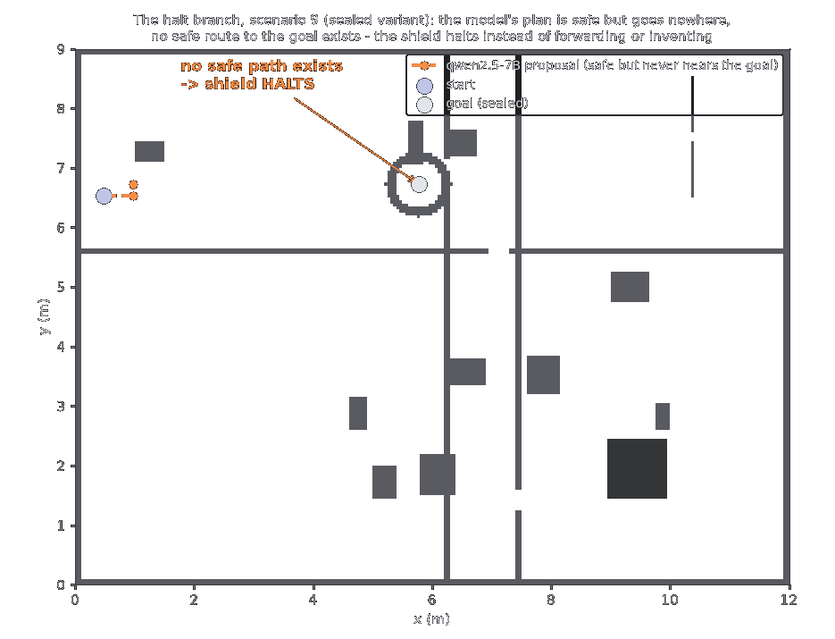

Sole developerJul to Sep 2026complete, every result replayed in CI
Detect, recover, or halt
An LLM proposes a route. A deterministic verifier checks it. On a fail, a provably-correct classical planner recovers a safe path, which is re-verified before anything moves. And when no safe path exists at all, the shield stops. A safe system has to know the difference between "the model was wrong, here is the fix" and "there is no safe action".
Watch the film
Try the shield
The whole loop, running here: the verifier, the exact-cost A* over the footprint-inflated grid, and the re-verification by both judges, ported from the repository and its two submodules. Run it on qwen's committed proposal for a map and it makes the decision the C++ build recorded, down to the recovered path. Then wall the goal in and watch it halt, or paint walls of your own and see what it does.
It opens on map 0 with qwen2.5-7B's proposal and runs the loop at once. The verifier rejects the proposal, A* on the footprint-inflated grid finds another route, both judges pass it, and the shield forwards that recovery: the same 98 waypoints the C++ build recorded. Then seal the goal in and watch it halt instead.
- 1. Verify the proposal
- 2. Does it end at the goal?
- 3. Plan a recovery on the inflated grid
- 4. Re-verify with both judges
The keystone
This repository connects my other work: LLM planners fail in measurable ways (plan-failure-bench), so I detect those failures deterministically (the safety verifier) and recover with a path from a planner that is provably correct (the planning core), or halt when no safe path exists. It is deliberately a composition of already-verified components, pinned as git submodules at exact commits: no new algorithms, just the full detect-and-recover loop, with every guarantee re-proven by CI on every push. The term shield follows the safe-RL usage of Alshiekh et al.
The forward gate is goal-aware: a proposal passes only if it is both verifier-safe and actually ends at the goal. That requirement exists because a dry run caught a real case: a qwen proposal that was safe and went nowhere near the goal. Safety and task-success stay separate judgments; the gate requires both, and the design change is documented in the pre-registration commit, made before any result was published.
The decision flow
The results



As on every project on this site, the outcome taxonomy was committed before the first published results, every number above is quoted from the tool's output, the figures are rendered from the evaluation's own committed artifacts, and CI replays the entire evaluation, failing on any unsafe fallback or any sealed-goal case that does not halt.